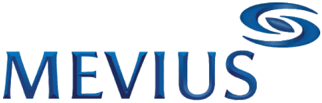

메비우스 Mevius
메비우스(Mevius)는 1977년부터 일본담배산업(Japan Tobacco)에서 생산하는 담배 상표이다. 세계에서 3번째로 많이 팔리는 담배 제품으로, 전 세계 40여 개국에서 판매된다.
최종 업데이트

메비우스는 어떤 브랜드인가
메비우스는 일본담배산업(Japan Tobacco)이 1977년부터 생산해 온 담배 상표이다. 세계에서 3번째로 많이 팔리는 담배 제품이며, 일본을 비롯한 아시아와 태평양, 유럽, 아메리카 등 전 세계 40여 개국에서 판매된다.
2010년과 2011년에 전 세계 판매 1위를 기록했고, 2012년에는 유로모니터 기준 판매량 월드베스트 1위에 올랐다. 현재 많은 파생형이 만들어져 공급되고 있다.
일본 내 판매용 메비우스 아쿠아 스플레쉬에는 흡연의 위험성을 경고하는 후생노동성의 홈페이지 주소가 표시되어 있다. 대한민국에서 판매되는 제품은 KT&G가 주문자 상표 부착 생산 방식으로 생산해 공급한다.
메비우스는 어떻게 시작되고 성장했나
메비우스는 1977년 일본담배산업(Japan Tobacco)이 발매한 담배 상표이다. 발매 당시의 상표명은 마일드 세븐(Mild Seven)이었다.
세계 보건 기구 담배 규제 기본 협약에 따라 '마일드', '라이트', '저타르' 등의 상표명이 금지되었고, 전 세계 175개국 중 85개 국가가 이 협약을 시행했다. 이에 따라 2013년 상표명을 메비우스로 변경했다.
일본담배산업은 르노 F1팀의 스폰서로 2006년까지 차량 외부에 메비우스 광고를 부착하게 했으나, 유럽 연합의 담배 광고 규제로 현재는 스폰서를 하지 않는다.
메비우스의 브랜드 아이덴티티는 무엇인가
마일드 세븐에서 2013년 이름을 바꾼 일본담배산업의 담배 상표로, 세계에서 3번째로 많이 팔리며 전 세계 40여 개국에서 판매된다.
메비우스는 지금 어떤 상태인가
2013년 상표명을 마일드 세븐에서 메비우스로 변경해 현재에 이르고 있다. 2012년 유로모니터 기준 판매량 월드베스트 1위에 올랐으며, 현재 많은 파생형이 만들어져 공급되고 있다.
대한민국에서는 KT&G가 주문자 상표 부착 생산 방식으로 생산해 공급한다. 르노 F1팀 스폰서 활동은 유럽 연합의 담배 광고 규제로 현재 하지 않는다.
메비우스 로고는 어떻게 변해왔나
자주 묻는 질문
메비우스는 어떤 산업의 브랜드인가요?
메비우스는 식음료 분야의 브랜드입니다.
메비우스의 브랜드 아이덴티티는 무엇인가요?
마일드 세븐에서 2013년 이름을 바꾼 일본담배산업의 담배 상표로, 세계에서 3번째로 많이 팔리며 전 세계 40여 개국에서 판매된다.
메비우스는 현재 어떤 상태인가요?
2013년 상표명을 마일드 세븐에서 메비우스로 변경해 현재에 이르고 있다.
출처와 검증
메비우스 관련 참고: 위키데이터 Q913525 · 한국어 위키백과 · 영어 위키백과. 브랜드명은 한글과 원어를 함께 표기하되 데이터에 없는 표기는 만들지 않습니다. 기원 국가·설립연도는 검수된 정의문에서 확인된 값을 우선하고, 없을 때만 공식 웹사이트 URL이 일치하는 위키데이터 개체의 값을 씁니다. 위키데이터 값은 2026-11-15 기준입니다.